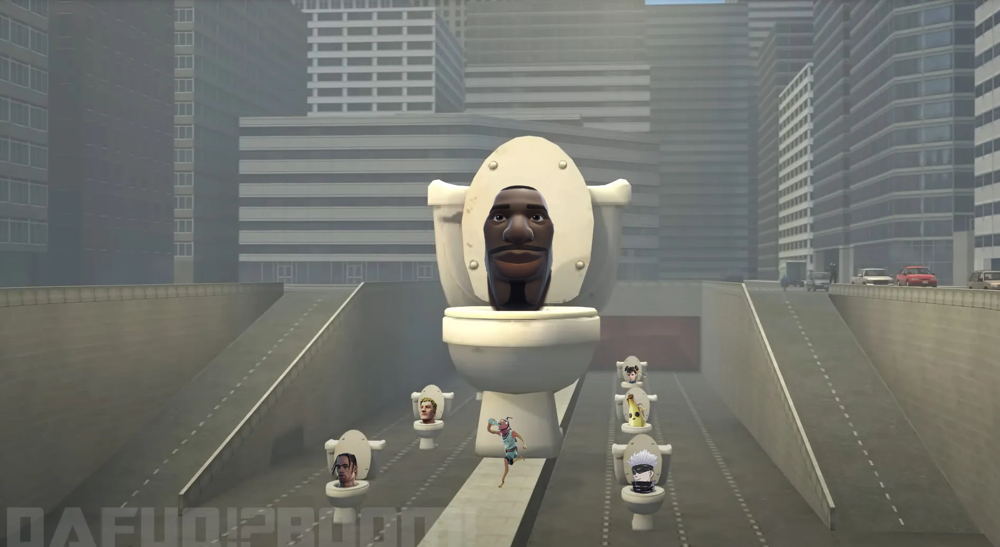

This is a combination of Fortnite and Skibidi Toilet, two medias that are considered "brainrot" to young children. Instead of the Skibidi heads, I simply replaced them with popular Fortnite skins. The smaller heads were much easier to work with since they had necks. However the main Fortnite stare was harder since it didn't have a neck, making it look choppy.